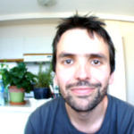
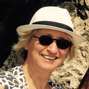
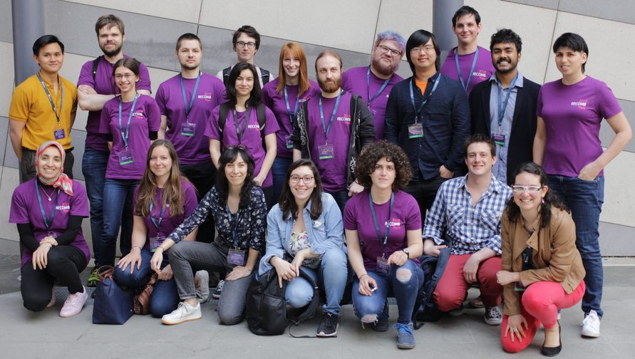

- Steering Committee
- Organizing Committee
- Volunteers
- Program Committee
- Highlights Committee
- Posters Committee
- Satellites Committees
Steering committee
Organizing committee
Alessandra Carbone
Sorbonne Université, CNRS
Publicity
Yann Ponty
CNRS, Ecole polytechnique, Inria Saclay
General co-chair
Mireille Régnier
Ecole polytechnique, CNRS, Inria Saclay
General co-chair
Celine Scornavacca
CNRS, Université Montpellier
Communication and web presence
Eric Tannier
Inria, Université Claude Bernard Lyon 1
Sponsors
Stéphane Vialette
CNRS, Université Paris-Est Marne-la-Vallée
Volunteering/travel grants
Additional Visual designs by Laurence Meslin
Administrative support by Evelyne Rayssac.
Network administration by Remy Dernat.
Volunteers

- Nika Abdollahi
- Aaron Ayllon-Benitez
- Kiran Kumar Battula
- Quentin Bonenfant
- Shounak Chakraborty
- Urszula Czerwinska
- Wesley Delage
- Campbell Elliott
- Maud Fagny
- Cervin Guyomar
- Anna Hakobyan
- Ana Hernandez Lopez
- Julie HUREL
- Chirag Jain
- Maël Kerbiriou
- Romain Lannes
- Lolita Lecompte
- Audrey Legendre
- QI MA
- Camille Marchet
- Pierre Marijon
- Juraj Michalik
- Pierre Morisse
- Hassan Nikaein
- Caroline Obermeier
- Saran Pankaew
- Pauline/Maria Pommeret
- Guillaume Postic
- Christelle Rovetta
- Afaf SAAIDI
- Vidisha Singh
- Himanshu Narayan Singh
- Eden Yitna Teferedegn
- Robel Tesfaye
- Jakub Tyrek
- Maria Waldl
- T. Cameron Waller
- Rosalie Waller
- Mathias Weller
- Hua-Ting YAO
Program committee
PC members :
- Max Alekseyev – George Washington University
- Rolf Backofen – Albert-Ludwigs-University Freiburg
- Vineet Bafna – University of California San Diego
- Chris Bailey-Kellogg – Dartmouth College
- Nuno Bandeira – University of California San Diego
- Ziv Bar-Joseph – Carnegie Mellon University
- Anastasia Baryshnikova – Calico Life Sciences
- Niko Beerenwinkel – ETH Zurich
- Bonnie Berger – Massachusetts Institute of Technology
- Mathieu Blanchette – McGill University
- Sebastian Böcker – Friedrich Schiller University Jena
- Lenore Cowen – Tufts University
- Nadia El-Mabrouk – University of Montreal
- Irit Gat-Viks – Tel-Aviv University
- David Gifford – Massachusetts Institute of Technology
- Anna Goldenberg – SickKids
- Raluca Gordan – Duke University
- Fereydoun Hormozdiari – University of Washington
- Tao Jiang – University of California, Riverside
- John Kececiogu – University of Arizona
- Manolis Kellis – Massachusetts Institute of Technology
- Carl Kingsford – Carnegie Mellon University
- Gunnar W. Klau – Heinrich Heine University Düsseldorf
- Smita Krishnaswamy – Yale University
- Jens Lagergren – SBC and CSC, KTH
- Mark Leiserson – University of Maryland
- Christina Leslie – Memorial Sloan-Kettering Cancer Center
- Ming Li – University of Waterloo
- Jennifer Listgarten – University of California, Berkeley
- Jian Ma – Carnegie Mellon University
- Veli Mäkinen – University of Helsinki
- Paul Medvedev – The Pennsylvania State University
- Tijana Milenkovic – University of Notre Dame
- Bernard Moret – Ecole Polytechnique Fédérale de Lausanne
- Sara Mostafavi – University of British Columbia
- William Stafford Noble – University of Washington
- Layla Oesper – Carleton College
- Laxmi Parida – IBM
- Bogdan Pasaniuc – University of California, Los Angeles
- Itsik Pe’Er – Columbia University
- Jian Peng – University of Illinois at Urbana-Champaign
- Yann Ponty – CNRS/LIX, Polytechnique
- Natasa Przulj – University College London
- Teresa Przytycka – National Institutes of Health
- Ben Raphael – Princeton University
- Mireille Regnier – INRIA
- Knut Reinert – FU Berlin
- S. Cenk Sahinalp – Indiana University Bloomington
- Michael Schatz – Cold Spring Harbor Laboratory
- Alexander Schoenhuth – Vrije Universiteit Amsterdam
- Russell Schwartz – Carnegie Mellon University
- Roded Sharan – School of computer science, Tel Aviv university
- Mona Singh – Princeton University
- Donna Slonim – Tufts University
- Sagi Snir – Institute of evolution
- Jens Stoye – Bielefeld University
- Fengzhu Sun – University of Southern California
- Wing-Kin Sung – National University of Singapore
- Ewa Szczurek – University of Warsaw
- Glenn Tesler – University of California San Diego
- David Tse – Stanford University
- Tamir Tuller – Tel Aviv University
- Alfonso Valencia – Barcelona Supercomputing Center
- Fabio Vandin – University of Padova
- Jean-Philippe Vert – Ecole des Mines de Paris
- Martin Vingron – Max Planck Institut fuer molekulare Genetik
- Olga Vitek – Northeastern University
- Jerome Waldispuhl – McGill University
- Tandy Warnow – University of Illinois at Urbana-Champaign
- Sebastian Will – University of Vienna
- Jinbo Xu – Toyota Technological Institute at Chicago
- Yuzhen Ye – Indiana University Bloomington
- Noah Zaitlen – University of California San Francisco
- Alex Zelikovsky – Georgia State University
- Jianyang Zeng – Tsinghua University
- Louxin Zhang – National University of Singapore
- Xuegong Zhang – Tsinghua University
- Michal Ziv-Ukelson – Ben Gurion University of the Negev
Highlights committee
- Carlos Camacho – University of Pittsburgh
- Ben Raphael – Princeton university
Publications committee
Committee members to be announced
Poster committee
- Leena Salmela – University of Helsinki
- Simona Cristea – Harvard School of Public Health
- Victoria Popic – Illumina
- Iman Hajirasouliha – Weill Cornell Medicine of Cornell University
- Hosein Mohimani – Carnegie Mellon University
- Stefan Canzar – Gene Center, LMU Munich
Satellite committees
RECOMB-SEQ
- Rayan Chikhi (co-chair), CNRS, University of Lille, France
- Mark Chaisson (co-chair), University of Southern California, USA
More details on the RECOMB-SEQ page.
RECOMB-Genetics
- Simon Gravel – McGill University, Canada
- Hugues Aschard – Institut Pasteur, France
More details on the RECOMB-Genetics page.
RECOMB-CCB
- Moritz Gerstung – EMBL-EBI, Hinxton, UK
- Valentina Boeva – Institut Cochin & Inserm, Paris, France
More details on the RECOMB-CCB page.
DREAM challenges and EPIDEMIUM@RECOMB
- Olivier de Fresnoye – Epidemium, France
- Julio Saez-Rodriguez – Aachen University, Germany & EMBL-EBI, Hinxton, UK
- Pablo Meyer-Rojas – IBM Watson, USA
- Gustavo Stolovitzky – IBM Watson, USA
- Elise Blaese – IBM Watson, USA
More details on the DREAM challenge/EPIDEMIUM page.